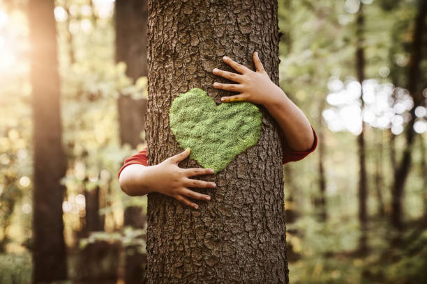

Wildlife Conservation Efforts
Wildlife conservation is crucial for maintaining biodiversity and ensuring the survival of endangered species. This page highlights key initiatives and strategies aimed at protecting wildlife around the globe.
Why is Wildlife Conservation Important?
Wildlife conservation helps to protect the natural habitats of various species, ensuring ecological balance. It also supports the livelihoods of communities that depend on these ecosystems for their survival.
Key Conservation Initiatives

Sustainable Forestry
Sustainable forestry means managing forests in a way that will keep forests healthy and usable for local communities and society as a whole for generations to come .To make consistent change, sustainable forestry requires a set of practices that promote environmental responsibility, social equity, and viable economic growth.
Here are some sustainable forestry practices:
- Follow local laws and maintain a sustainable forestry certification.
- Define tenure and use rights.
- Protect indigenous people's right.
- Priorities community relations and workers' rights.
- Balance forest resources and benefits with societal demand.
- Minimize environmental impact.
- Have a management plan.
- Monitor and assess regularly.
- Maintain high conservation value forests.
- Manage plantations with precaution.
Reforestation
Reforestation can be defined as the process of replanting trees in areas that have been affected by natural disturbances like wildfires, drought and insect and disease infestations and unnatural ones like logging, mining, agricultural clearing and development. By planting trees in areas that have been degraded or deforested, reforestation helps the environment by guaranteeing or accelerating the re-establishment of healthy forest structure by regrowing the forest canopy and preserving biodiversity within the ecosystem.
Wildlife conservation and biodiversity
"The conservation and sustainable use of mountain ecosystems are crucial aspects of global sustainability efforts, as outlined in the 2030 Agenda for Sustainable Development and other international agreements. Mountains play a vital role in providing essential resources such as water, energy, biodiversity, and key resources like minerals, forest products, and agricultural goods. Additionally, they serve as recreational areas and are integral to the survival of the global ecosystem."

Wildlife conservation and biodiversity
"The conservation and sustainable use of mountain ecosystems are crucial aspects of global sustainability efforts, as outlined in the 2030 Agenda for Sustainable Development and other international agreements. Mountains play a vital role in providing essential resources such as water, energy, biodiversity, and key resources like minerals, forest products, and agricultural goods. Additionally, they serve as recreational areas and are integral to the survival of the global ecosystem."
Wildlife conservation and biodiversity
"The conservation and sustainable use of mountain ecosystems are crucial aspects of global sustainability efforts, as outlined in the 2030 Agenda for Sustainable Development and other international agreements. Mountains play a vital role in providing essential resources such as water, energy, biodiversity, and key resources like minerals, forest products, and agricultural goods. Additionally, they serve as recreational areas and are integral to the survival of the global ecosystem."
How You Can Help
You can contribute to wildlife conservation by supporting local and global initiatives, volunteering your time, or simply spreading awareness about the importance of protecting our planet's biodiversity.
Get Involved